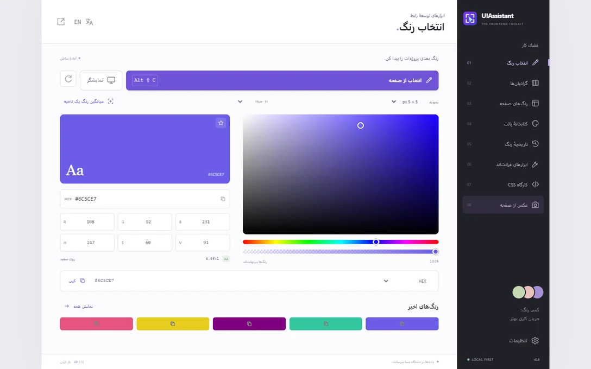

انتخاب رنگ از صفحه
رنگ یک پیکسل یا میانگین یک ناحیه را بردارید. رنگ انتخابی بهصورت خودکار در قالب HEX، RGB، HSL یا متغیر CSS کپی میشود.
افزونهٔ متنباز مرورگر
انتخاب رنگ، بررسی CSS، اندازهگیری فاصله و عکس از صفحه در یک افزونه. رنگ یک پیکسل را بردارید، استایل یک عنصر را کپی کنید یا از یک پنل اسکرولدار عکس کامل بگیرید.

ابزارها
جزئیات صفحه را به رنگ، کد CSS یا تصویری تبدیل کنید که در پروژهتان قابل استفاده باشد.
رنگ یک پیکسل یا میانگین یک ناحیه را بردارید. رنگ انتخابی بهصورت خودکار در قالب HEX، RGB، HSL یا متغیر CSS کپی میشود.
از رنگهای صفحه پالت بسازید. گرادیان خطی، شعاعی و مخروطی را ویرایش و به CSS، PNG یا SVG سازگار تبدیل کنید.
فونت، حاشیه، سایه و ابعاد محاسبهشدهٔ عنصر را ببینید. فاصلهٔ میان دو عنصر را اندازه بگیرید.
سرریز، متن بریده و مشکلات رایج دسترسپذیری را بررسی کنید. جهت RTL یا LTR را پیشنمایش کنید و صفحه را با تصویر مرجع بسنجید.
Grid، اندازهٔ واکنشگرا، سایه، گردی گوشهها و منحنی حرکت بسازید. توکنهای طراحی را به CSS یا JSON صادر کنید.
از بخش نمایان، ناحیهٔ انتخابی، تمام صفحه یا یک عنصر اسکرولدار عکس بگیرید و PNG یا JPEG ذخیره کنید.

نمونهٔ کاربرد
پنلی با اسکرول داخلی انتخاب کنید. UIAssistant پنل را اسکرول میکند، قطعات تصویر را به هم وصل میکند و اسکرول را به موقعیت اولیه برمیگرداند.
دریافت افزونه
این بستههای توسعه بدون امضا از GitHub Releases ارائه میشوند. مراحل نصب را در ادامه ببینید.
Chrome نسخهٔ ۱۱۶ به بعد
دانلود ZIPEdge نسخهٔ ۱۱۶ به بعد
دانلود ZIPFirefox دسکتاپ نسخهٔ ۱۴۰ به بعد
دانلود ZIP
ZIP را باز کنید. به chrome://extensions یا
edge://extensions بروید، Developer mode را روشن کنید و با
Load unpacked پوشهٔ حاوی manifest.json را انتخاب کنید.
به about:debugging#/runtime/this-firefox بروید، در This
Firefox گزینهٔ Load Temporary Add-on را بزنید و ZIP یا
manifest.json استخراجشده را انتخاب کنید. با راهاندازی مجدد Firefox
نصب موقت پایان مییابد.
روی دستگاه خودتان. پیشنمایش موقتاً در حافظه میماند و فقط وقتی خروجی بگیرید، فایل ذخیره میشود.
خیر. افزونه حساب، اشتراک یا ابزار آمارگیری ندارد. سورس آن روی GitHub در دسترس است.
مشکلات رایج مانند نبود متن جایگزین تصویر و کنترلهای بدون نام را پیدا میکند. نتیجه نقطهٔ شروع بررسی دستی است.